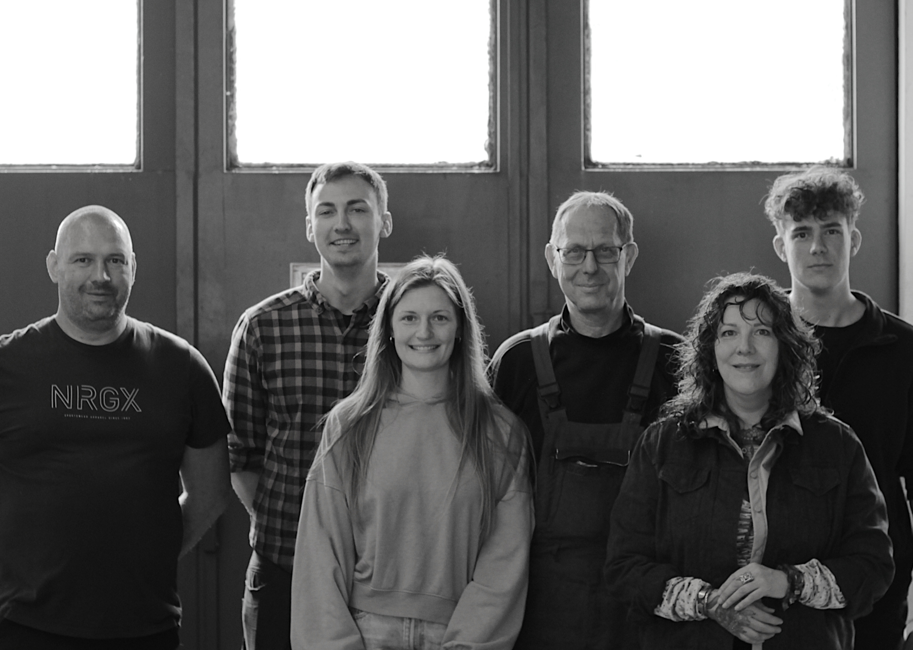
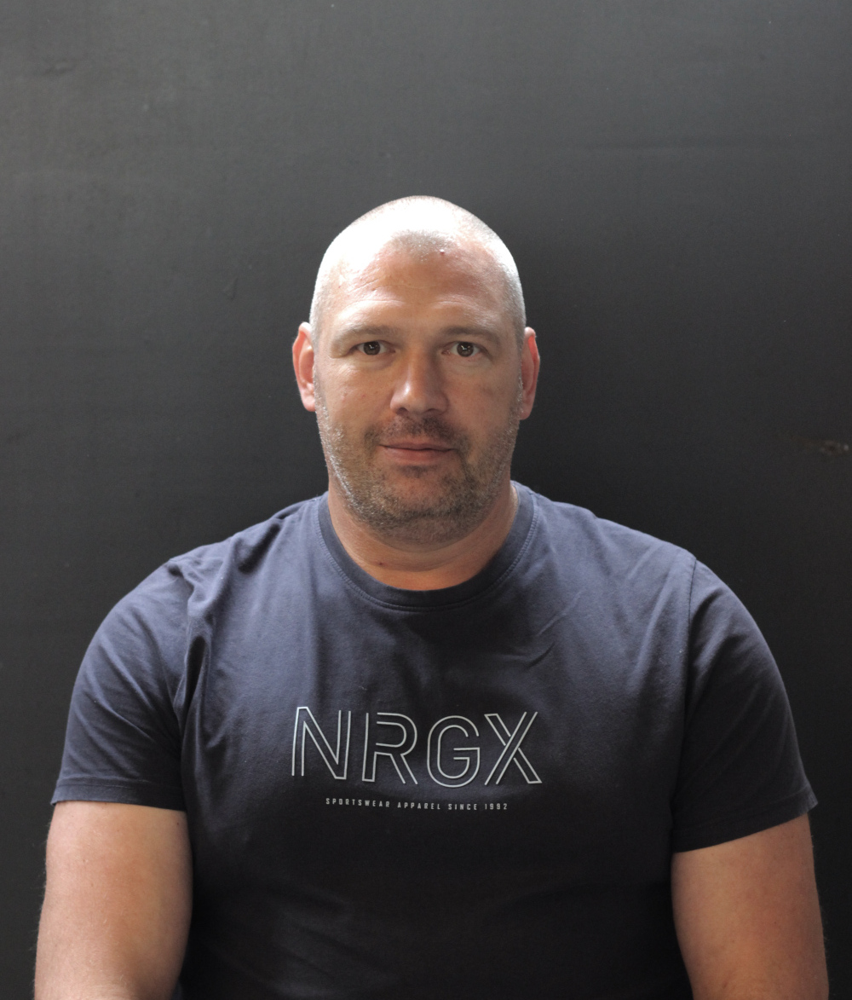
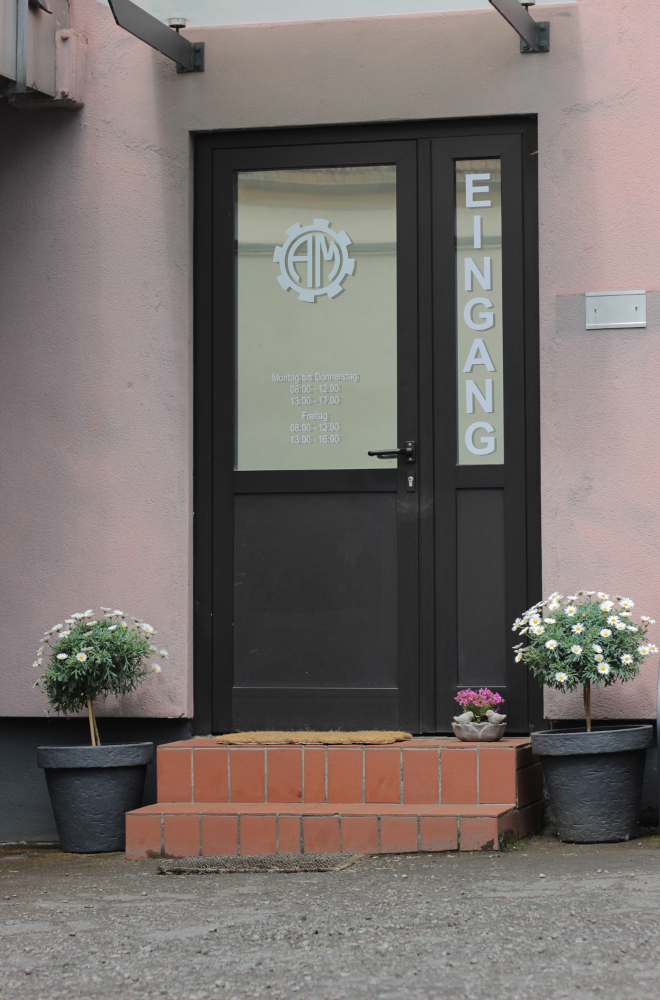
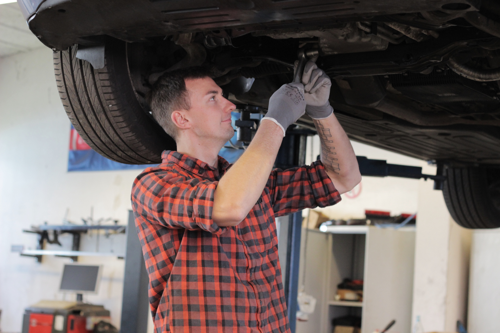
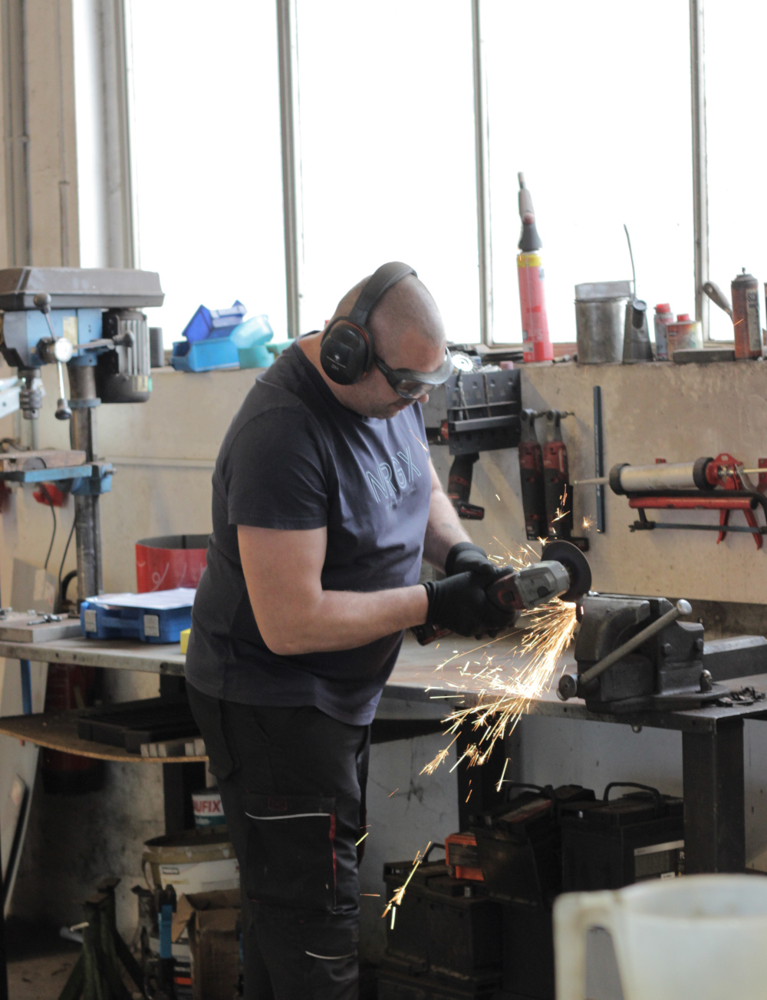
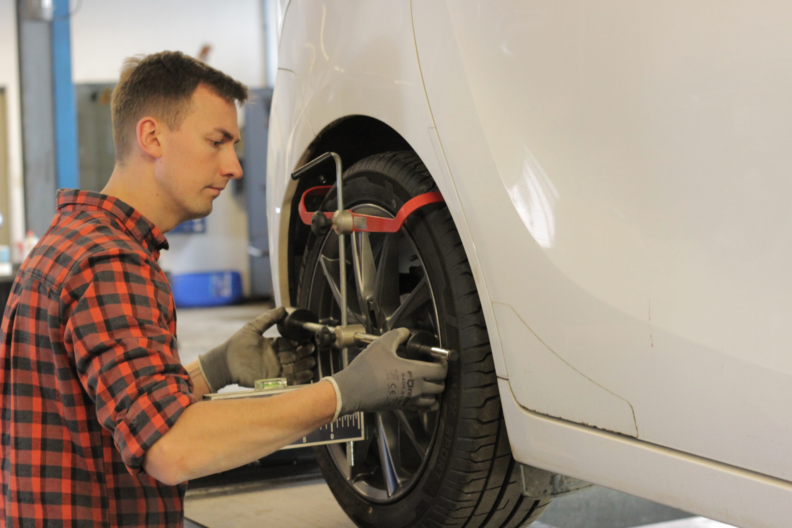
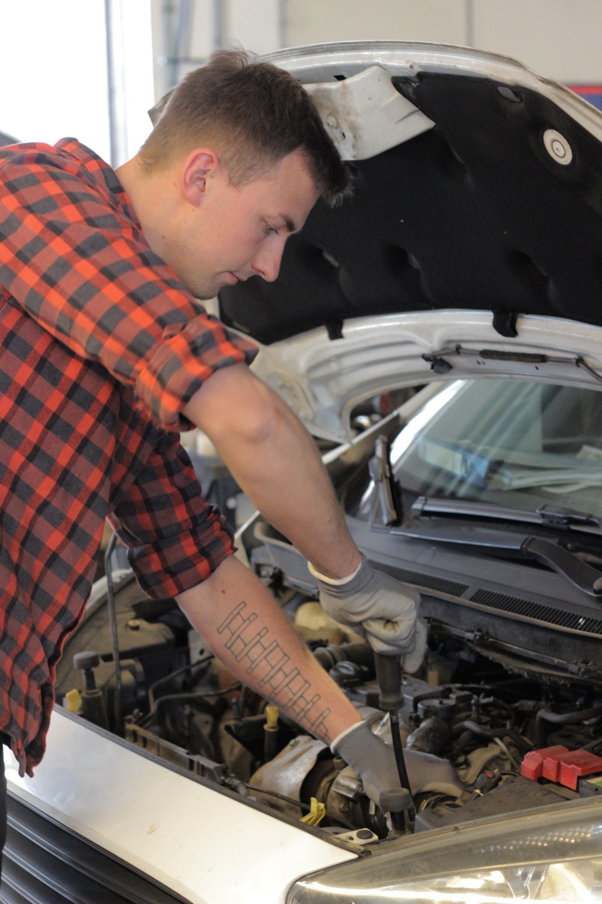

Willkommen bei
Automobiltechnik Merker
KFZ-Meisterbetrieb
Saarbrücker Str. 53
66265 Heusweiler
Google Maps
Montag bis
Donnerstag
- 08:00 - 12:00
- 13:00 - 17:00
Freitag
- 08:00 - 12:00
- 13:00 - 16:00
An Samstagen, Sonn- und Feiertagen ist unsere Werkstatt geschlossen.
Weitere Schließtage:
- 21.12.2026 - 01.01.2026: Weihnachtsferien
- 08.02.2027 Rosenmontag
- 07.05.2027 Brückentag
Unser Angebot
Seit 2025 stehen wir für Kundenzufriedenheit und bieten einen sauberen und unkomplizierten Service. Wir verbinden handwerkliches Know-How mit jahrzehntelanger Berufserfahrung und der Begeisterung für Autos und deren Technik. Autos sind weit mehr als bloße Fortbewegungsmittel. Für den Großteil unserer Kunden sind sie eine Herzensangelegenheit. Bei uns ist Ihr Fahrzeug in den besten Händen. Wir halten Sie während der Reparatur stets auf dem Laufenden und nehmen uns gerne Zeit, den Umfang und den Ablauf der Reparatur mit Ihnen zu besprechen. Unsere Preise sind stets transparent gestaltet, wir reparieren nicht ohne Ihre Freigabe.
Im Folgenden finden Sie eine Auswahl unserer Leistungen.
Kfz-Service
Austausch sämtlicher Betriebsflüssigkeiten (Bremsflüssigkeit, Getriebeöl, Kühlmittel, Motoröl), Auslesen des Fehlerspeichers, Fehlersuche bei einem störenden Geräusch, Austausch von Verschleißteilen, Reparatur, Wartung oder Austausch von Motor und Getriebe, Austausch von Zahnriemen und SteuerketteInspektion
Wartung nach Herstellervorgabe für alle Marken, gegebenenfalls mit Eintrag ins CheckheftAbgasanlage
Abgasdiagnose, Austausch jeglicher Komponenten im Abgasstrang, SchweißarbeitenBremsenservice
Austausch von Bremsenverschleißteilen, Einstellarbeiten an der Bremsanlage, Entlüftung des Bremssystems, Reparatur von Bremsleitungen, Funktionsprüfung auf dem BremsenprüfstandElektrik / Elektronik
Austausch von Leuchtmitteln, Fehlersuche in Kabelsträngen, Prüfung und Austausch von Sensoren und AktorenAchsvermessung
Komplette Fahrwerksvermessung und EinstellarbeitenReifenservice
Radwechsel, Reifenmontage, Reifenreparatur, Einlagerung der Räder, Verkauf neuer ReifenUnfallinstandsetzung
Erstellen des Gutachtens für die Versicherung, Kommunikation und Abwicklung mit der Versicherung, Reparatur des SchadensAutoglas-Reparatur
Austausch jeglicher Verglasung, SteinschlagreparaturBesondere Leistungen
Wechsel der Glühkerzen und Ausbohren abgerissener Glühkerzen mit Spezialwerkzeug, Reinigung von Verkokungen mit Walnussschalengranulat, GetriebespülungNachrüstung
Anhängerkupplung, Einparkhilfe, TieferlegungsfedernKlimaservice
Klima-Check mit den Kältemitteln R1234yf und R134a, Diagnose und Fehlersuche, Leckageortung, Austausch jeglicher Komponenten der Klimaanlage, Spülung der KlimaanlageWartung und Reparatur von Hochvoltfahrzeugen
Elektrofahrzeuge sind bei uns herzlich willkommenHU*/AU
Haupt- und Abgasuntersuchung bei uns im Hause, Vorbereitung zur Hauptuntersuchung, Mängelbeseitigung, HU-Nachuntersuchung* HU nach § 29 StVZO durchgeführt durch externe Prüfingenieure einer amtlich anerkannten Überwachungsorganisation.

Unser Team
-
Alexander Merker
Inhaber und Kraftfahrzeugtechnikermeister
-
Elaine Merker
Finanzen und Buchhaltung
-
Roman Serf
Kraftfahrzeugtechnikermeister
-
Alexandra Hoffmann von Pidoll
Kundenservice
-

Róbert Böviz
Umschüler zum Kraftfahrzeugmechatroniker
-
Marian Jochum
Auszubildender zum Kraftfahrzeugmechatroniker
Kontakt
Kontaktieren Sie uns gerne persönlich, telefonisch per WhatsApp oder per E-Mail bei Anliegen rund um Ihr Fahrzeug.
- Tel.: 06806 / 60 81 70
- WhatsApp: 06806 / 60 81 70
- E-Mail: info@automobiltechnik-merker.de
- Maps: Saarbrücker Str. 53, 66265 Heusweiler




